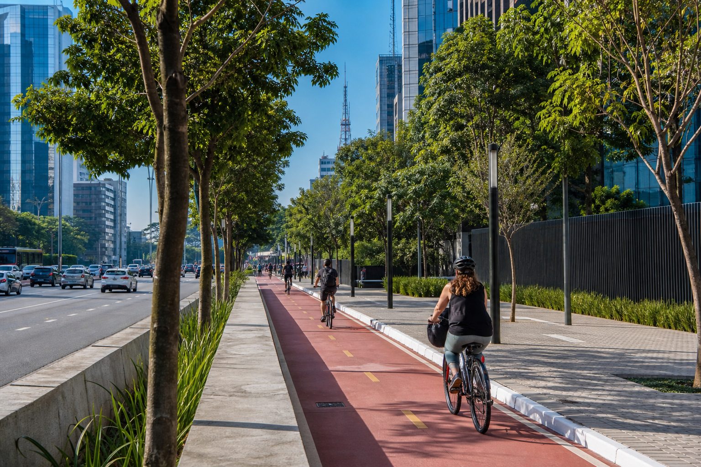
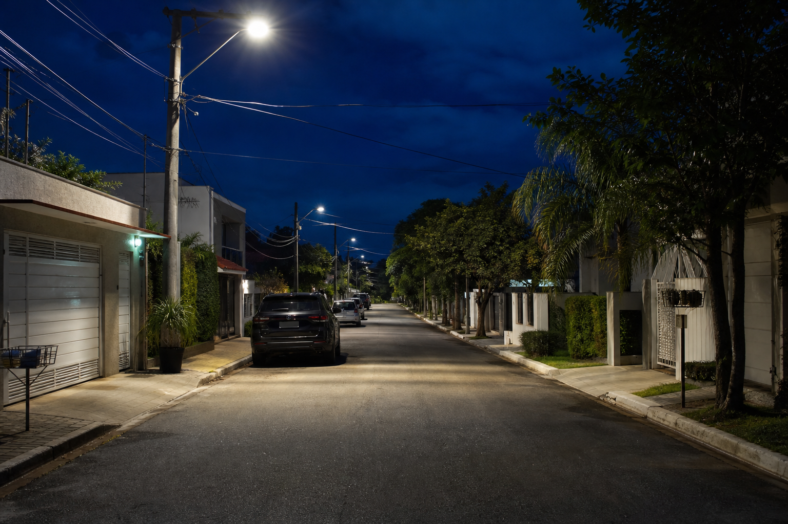
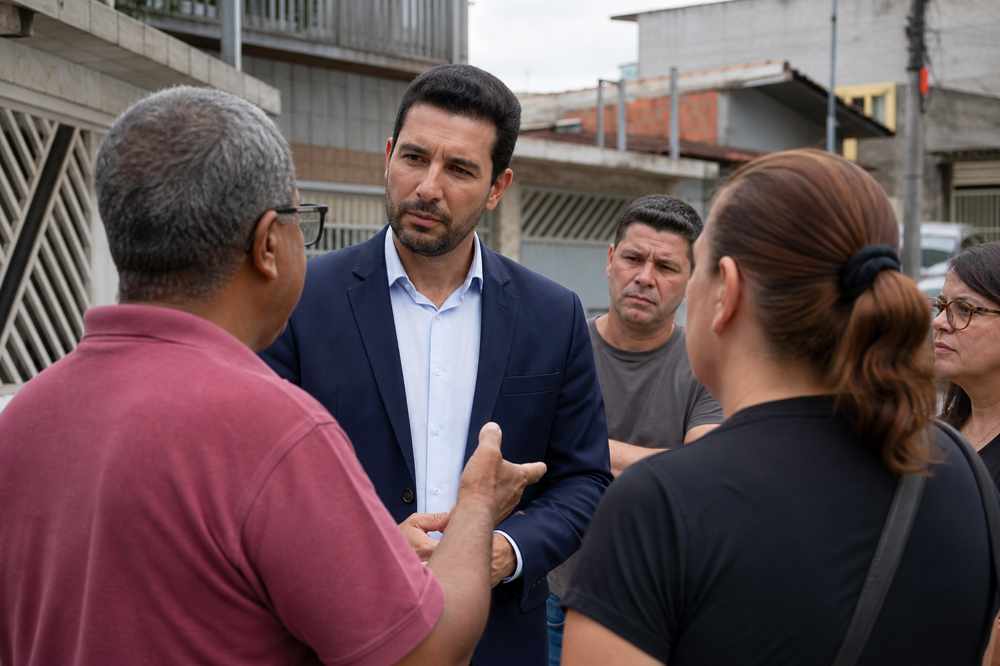
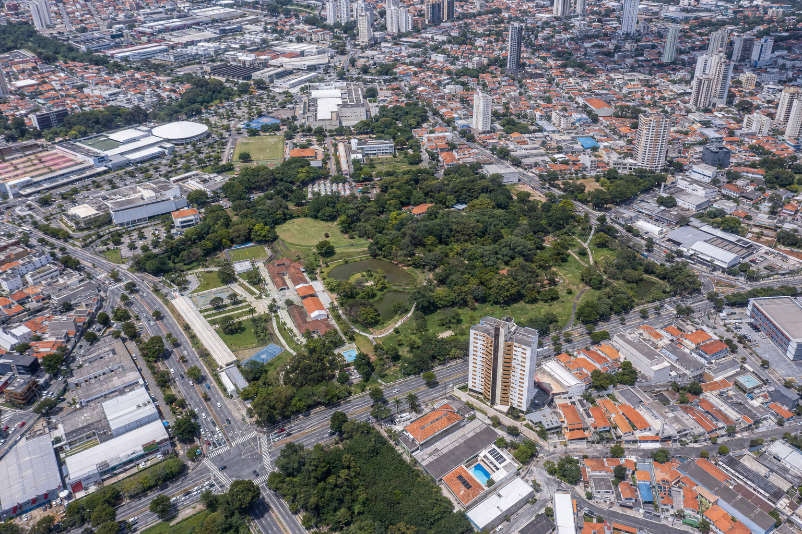

01
Mobilidade sustentável
Ciclovias, calçadas acessíveis, transporte público eficiente e integração com trens.
Mandato ativo 2025-2028
— Trabalhando por uma cidade mais justa e humana, com mobilidade sustentável, saúde básica, educação de qualidade e segurança cidadã, diálogo direto com a população e transparência total.
Lucas Zacarias
Atualizações fictícias sobre atuação legislativa, obras e atendimento à população em Santo André.
Vídeo de apresentação do mandato e da atuação legislativa.
Eixos que guiam meu trabalho no legislativo, com foco em atendimento à população, participação popular e transparência total.
Enviar demanda do bairroEixos que orientam a atuação legislativa e o atendimento à população.

Ciclovias, calçadas acessíveis, transporte público eficiente e integração com trens.
Mais UBS, redução de filas, telemedicina e atendimento humanizado nas unidades.
Escolas em tempo integral, valorização de professores e tecnologia nas salas de aula.

Iluminação pública, câmeras de monitoramento e programas de prevenção à violência.

Lucas Zacarias é vereador de Santo André com mandato focado em mobilidade sustentável, participação popular e transparência. Herdeiro de um legado familiar de serviço público, une tradição e inovação.
Formado em Gestão Ambiental e pós-graduado em Petróleo e Gás, traz uma visão técnica para os problemas da cidade. Sua base eleitoral é forte na Vila Palmares, com atuação em toda Santo André.
Projetos de lei aprovados nas áreas de meio ambiente, incentivo a ciclovias e transparência de gastos públicos. Participa ativamente das comissões de Saúde e Educação.

Selecione um bairro para registrar demanda, solicitar visita ou acompanhar encaminhamentos do gabinete em Santo André.
Outros bairros em Santo André
O gabinete também recebe demandas de regiões vizinhas e bairros em expansão. Escolha o seu para abrir o formulário com o bairro já sugerido.
Reporte problemas, sugira projetos ou solicite uma visita ao gabinete.
Transparência — Em breve: prestação de contas mensal, diárias e equipe do gabinete.